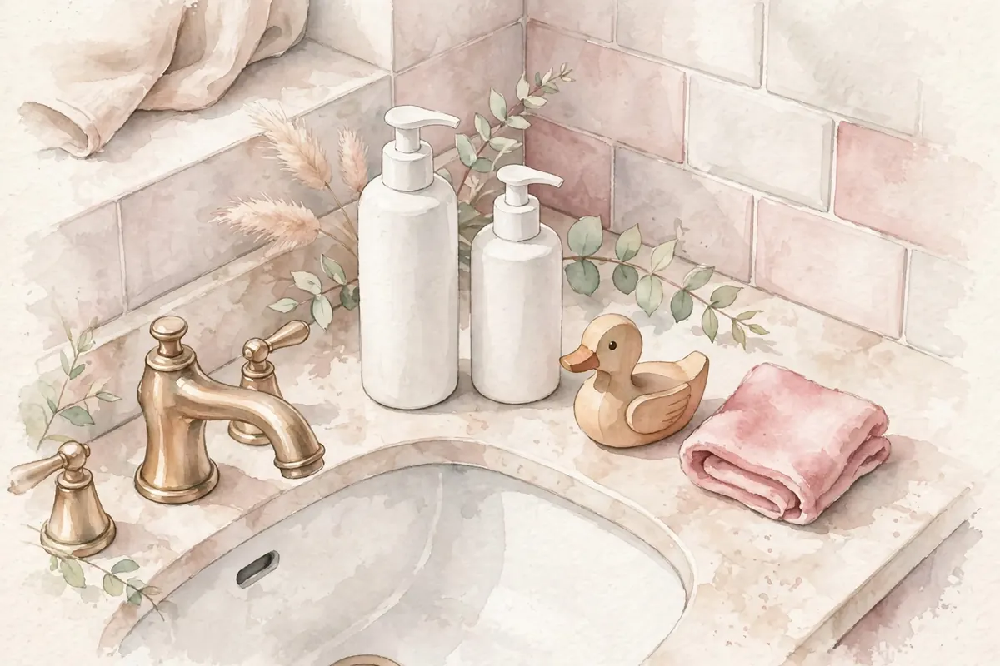
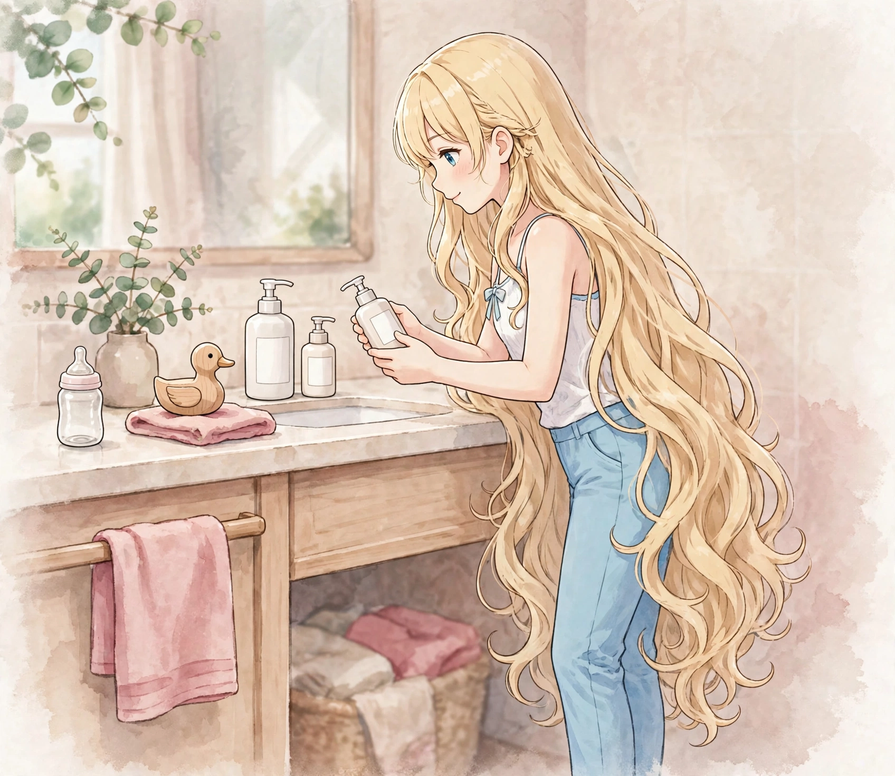

トップ ＞ ヘアケア ＞ 子どもと分けるシャンプーの表示確認
子どもと分けるシャンプーの表示確認

家族でお風呂を共にすると、「子どもには子どものシャンプーを」という場面が出てきます。売り場には「子ども用」「ベビー用」といった表示の商品が並びます。この記事では、表示の確認ポイントと、家庭での分け方の運用を整理します。
まず「対象表示」を確認する
子ども向けとされる商品には、対象年齢や対象についての表示がある場合があります。「◯歳から」といった案内や、新生児向けかどうかなど、対象の書き方は商品ごとに異なります。買う前に、対象表示が自分の子どもの年齢と合っているかを確認するのが第一歩です。表示がない場合は、販売ページの案内や、メーカーへの問い合わせで確認できます。
大人用のシャンプーと子ども用のシャンプーは、表示の前提が異なります。「家族で1本」という使い方をする場合は、その商品の対象表示の範囲内かどうかを先に確認してください。
成分表示は、家族分を見比べる習慣を
子どもの分を分けるときは、大人用と子ども用の成分表示を見比べる良い機会です。並び方や顔ぶれの違いを眺めるだけでも、表示を読む練習になります。アレルギーなど、個別に避けたい成分がある場合は、表示での確認に加えて、専門家への相談が基本です。
香りの強さも、家族で感じ方が分かれる部分です。子どもの分は、使う本人の感想を聞きながら選ぶと、洗髪の時間が前向きなものになります。
分け方の運用は、置き場所と量の目安で
家庭での運用は、ボトルの置き場所を分けることが基本です。浴室の中で、大人用は上の段、子ども用は手の届く段、のように場所を決めると取り違えが減ります。ポンプの回数の目安も、髪の長さが違うので人ごとに決めておくと、減り方の管理がしやすくなります。
対象表示の確認、表示の見比べ、置き場所の工夫。この3点で、家族のシャンプーの分け方は安定します。
洗い方の手順についても、子どもと大人では工夫のポイントが少し異なります。子どもは目に水や泡が入ることを嫌がることが多いため、シャンプーの量を控えめにして、すすぎを短く確実に済ませる進め方が向きます。泡の量が多いとすすぎに時間がかかり、洗髪そのものが苦手になりやすくなります。顔にかからないよう、後ろに反らす姿勢や、シャワーキャップなどの道具を使う家庭もあります。洗髪の時間が「嫌な時間」にならないことが、長く見たときの何よりの土台です。本人の感想を聞きながら、量と手順を調整してあげてください。
置き場所を決める際は、子ども本人が届く・届かないも基準になります。自分で洗える年齢の子には、自分のボトルの場所を決めてあげると、洗髪の自立の練習にもなります。家族のルールは、成長に合わせて見直していきましょう。

セラフィナ「分ける前に、対象表示の確認から。置き場所を決めると取り違えが減るね」

セラフィナ｜美容の道具箱の案内役
「量と表示が分かれば、美容は失敗しない。」——セラフィナと白猫のモコが、買う前のチェックポイントを案内します。綺麗になりたい気持ちに正直に、でも表示は冷静に読むのが、このサイトの約束です。